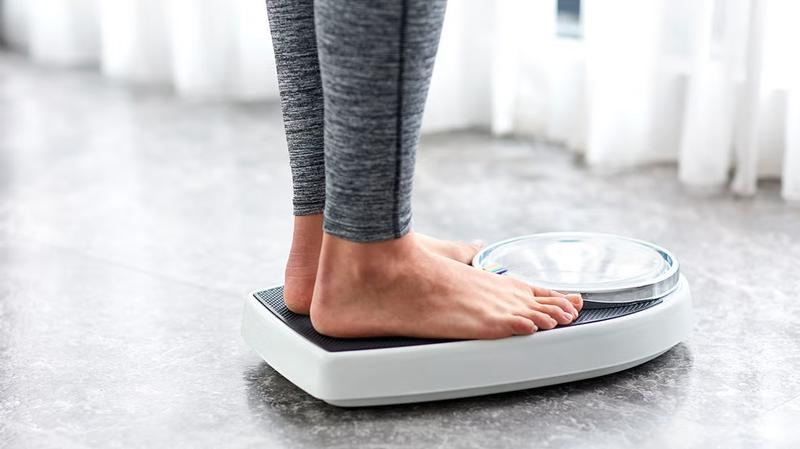
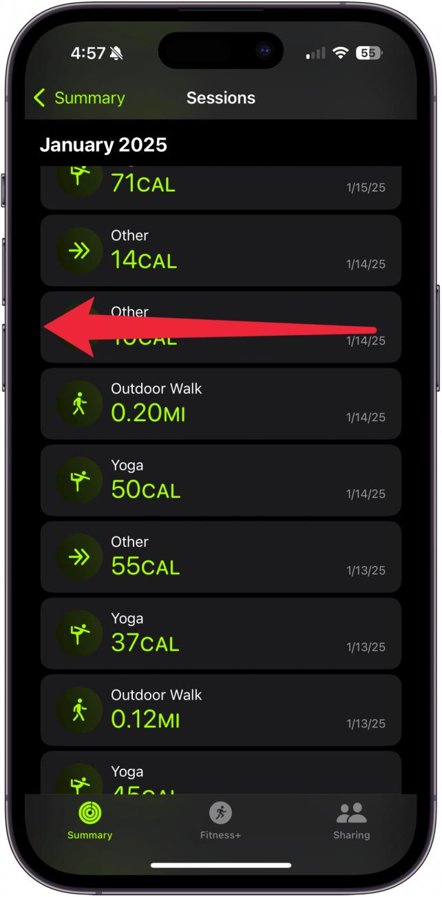
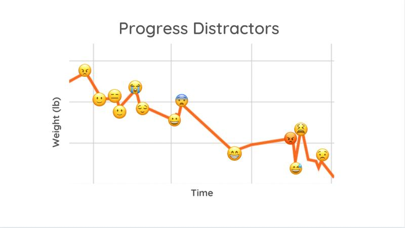

Health Calculators
Free. Private. No accounts. Your data stays in your browser.
BMI Calculator
Body Mass Index based on height and weight. Includes trend tracking and history.
Body Fat Calculator
Navy method estimate using neck, waist, and hip measurements.
BMR Calculator
Basal Metabolic Rate using Mifflin-St Jeor equation.
Calorie Calculator
Daily calorie needs based on activity level and goals.
Ideal Weight Calculator
Compare Devine, Robinson, and Miller formulas.
WHtR Calculator
Waist-to-Height Ratio. Simple but powerful health indicator.
From the Blog
Real stories about using these tools.

Why I Stopped Weighing Myself Every Day
Why I Stopped Weighing Myself Every Day I used to step on the scale every morning. 7:15 AM, before coffee, same routine. The number dictated my mood....

Why I Deleted My Fitness App After Using It for 2 Years
Why I Deleted My Fitness App After Using It for 2 Years MyFitnessPal. Two years. Every meal. Every snack. Every coffee. Weighed food. Scanned barcode...

I Stopped Weighing Myself Every Day
I Stopped Weighing Myself Every Day I used to step on the scale every morning. 7:15 AM, before coffee, same routine. The number dictated my mood. 174...
What I Learned From 6 Months of Failed Diet Attempts
What I Learned From 6 Months of Failed Diet Attempts January: Keto. Lost 5 pounds in two weeks. Felt terrible. Brain fog. Constipated. Gave up after ...

What 8 Months of Data Taught Me About My Body
What 8 Months of Data Taught Me About My Body Logging weight since September. 34 entries. Not every week (missed some), but consistent. Looking at d...

The Weekend Weight Rebound Is Real
Every Monday morning, I step on the scale and curse. Without fail, I'm two to four pounds heavier than Friday. Every. Single. Week. For a while, I tho...